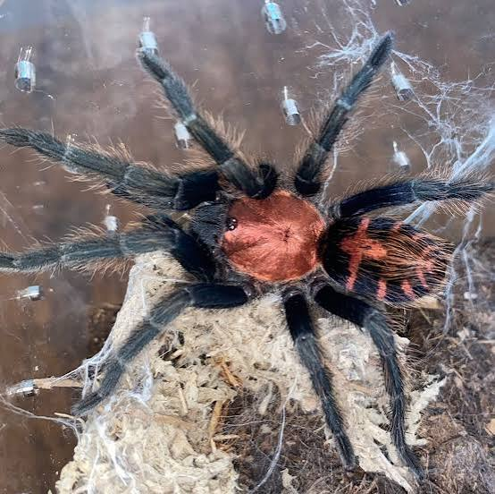

Davus pentaloris
Acquista subito
15,00 €
Dettagli
Nome scientifico: Davus pentaloris
Nome comune: Tarantola Tigre Guatemalteca
Origine: Guatemala e regioni limitrofe dell'America Centrale
Dimensioni: Femmine adulte fino a 10-12 cm di legspan; maschi leggermente più piccoli e sottili.
Longevità: Femmine fino a 12-15 anni; maschi circa 3-4 anni.
Alloggio
Terrario: Minimo 20x20x25 cm per un adulto, considerando il suo stile di vita prevalentemente terrestre.
Substrato: 5-10 cm di fibra di cocco, torba o terriccio per consentire lievi scavi.
Arredamento: Nascondigli (corteccia, legno), piante artificiali o vive. La specie può creare ragnatele leggere intorno al nascondiglio.
Temperatura: 24-28°C di giorno; non scendere sotto i 20°C di notte.
Umidità: 65-75%, mantenuta con nebulizzazioni leggere e una buona ventilazione.
Alimentazione
Prede: Grilli, blatte, locuste, drosofile per sling. Frequenza: Adulti: Ogni 7-10 giorni.
Sling (giovani): Ogni 3-5 giorni.
Acqua: Una piccola ciotola d’acqua fresca sempre disponibile.
Comportamento
Temperamento: Nervosa ma raramente aggressiva; preferisce fuggire o nascondersi se disturbata.
Abitudini: Semi-terricola, può creare rifugi e ragnatele nella zona inferiore del terrario.
Manipolazione: Sconsigliata per il suo temperamento nervoso e la velocità.
Curiosità: La Davus pentaloris è conosciuta per il suo pattern tigrato sull’addome e il carapace dai toni rossastri, che la rendono una specie molto attraente per gli allevatori.